The Map
The real Laurel/Fulton road network, drawn from OpenStreetMap at full extent — every street where it really is. Public version: people and street names only, no house numbers.
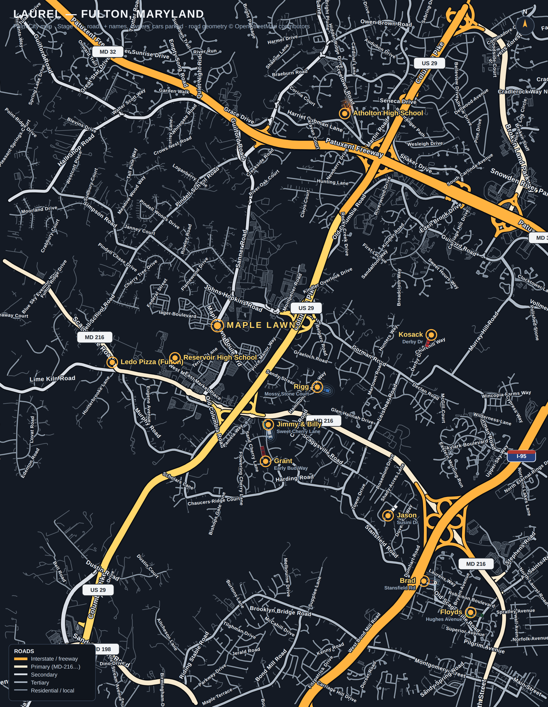
The Fleet — In-Game, Two Ways
Gemini’s true-scale 3D renders (Blender, exact real-world dimensions) and the flat top-down sprites that drive the map — same nine house cars, both styles.
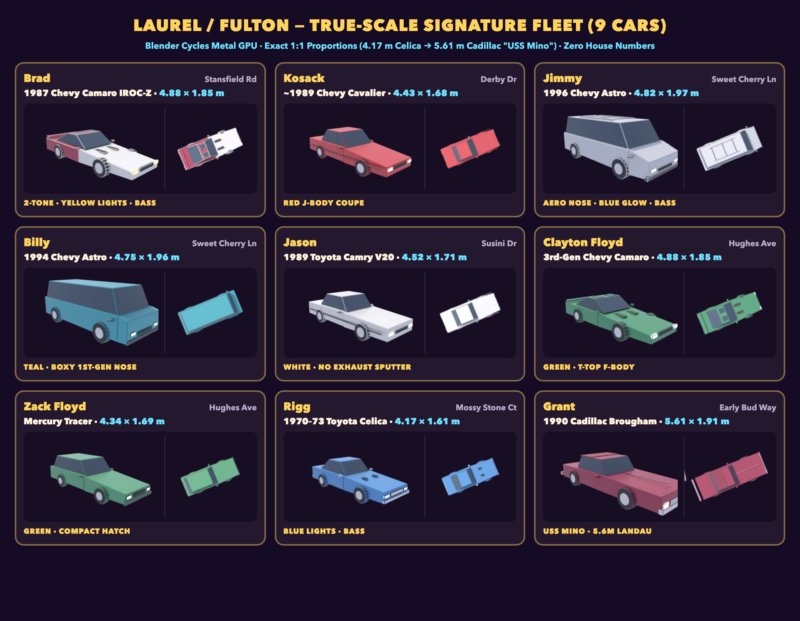
The map sprites, at true relative scale — Grant’s Cadillac is really that much bigger than Rigg’s Celica:
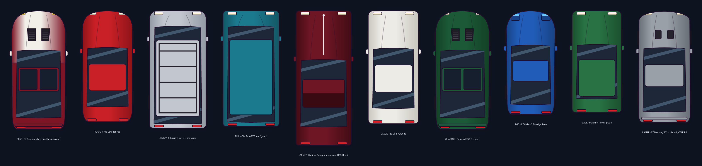
Real Inspiration → In-Game Asset
Every car was drawn from real photographs of the real model. Left: the photo. Right: the sprite it became.
Brad
Stansfield Rd
1987 Camaro IROC-Z — two-tone (white front, maroon rear), yellow headlights, loud sound system
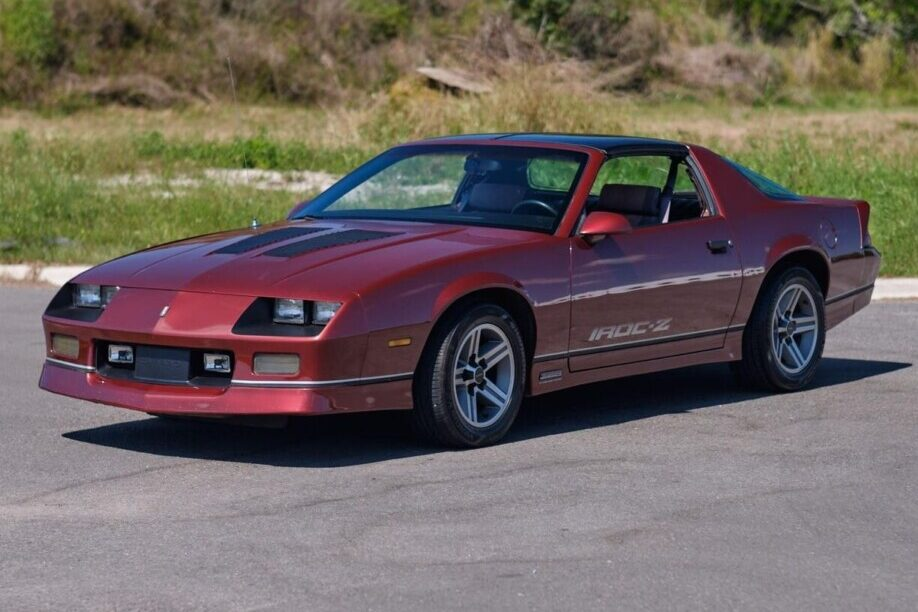
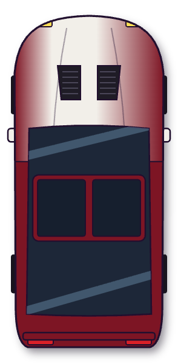
Kosack
Derby Dr
Cavalier sedan, 1996 — red
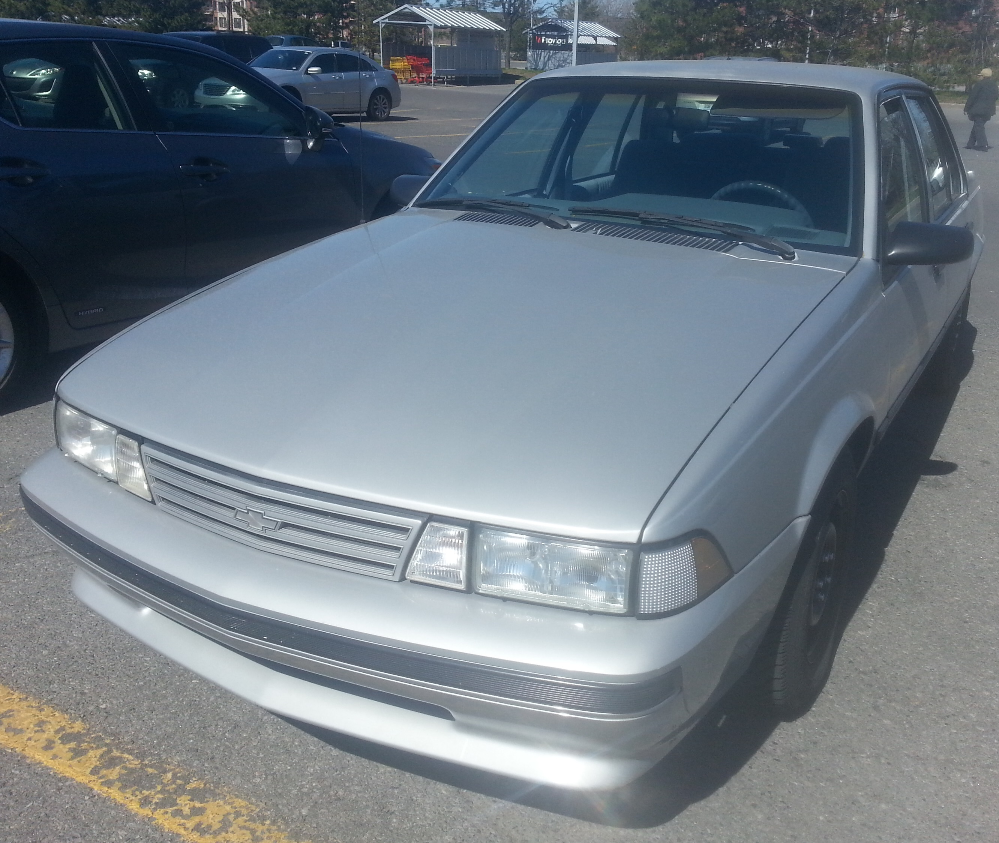
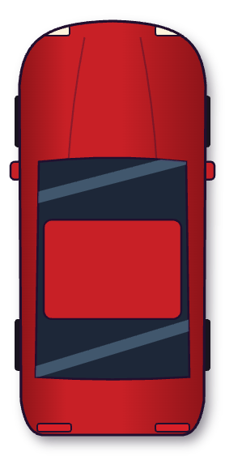
Jimmy
Sweet Cherry Ln — shares the house with Billy
1996 Astro — silver, blue neon underglow, loud sound system
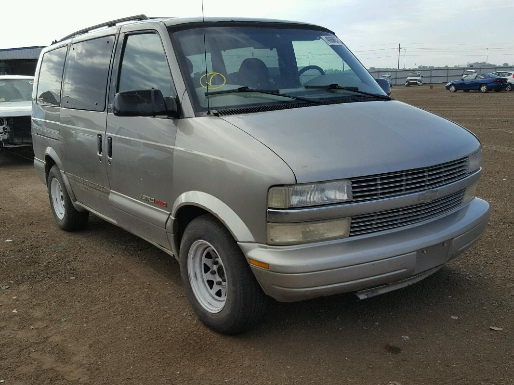
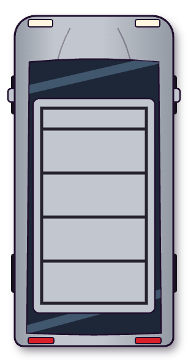
Billy
Sweet Cherry Ln — shares the house with Jimmy
1994 Astro — teal blue, boxy first-generation body

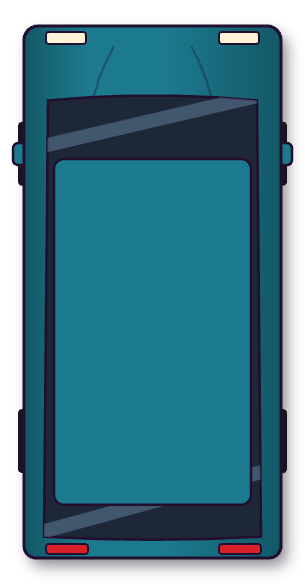
Jason
Susini Dr
1989 Camry — white, NO exhaust: loud and horrible, sputters from the tailpipe

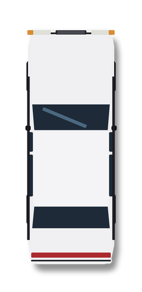
Clayton Floyd
Hughes Ave — the Floyds house
Camaro IROC-Z — dark green
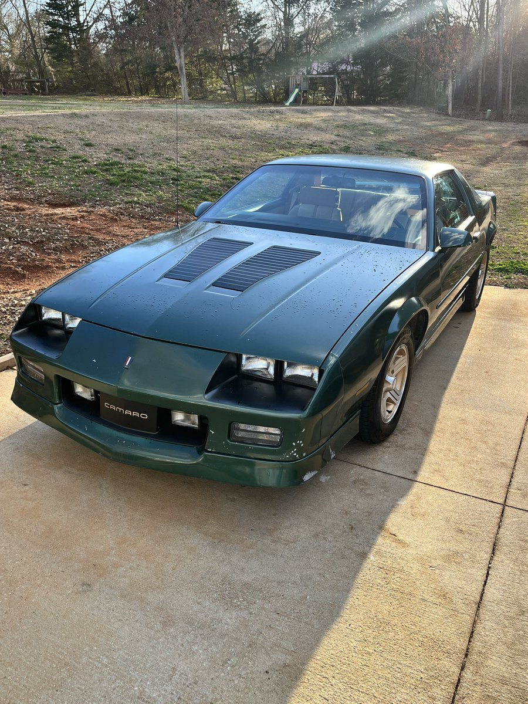
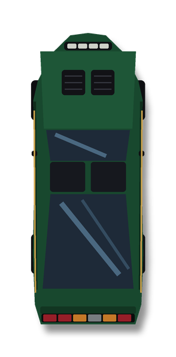
Zack Floyd
Hughes Ave — the Floyds house
Mercury Tracer 5-door hatch — green

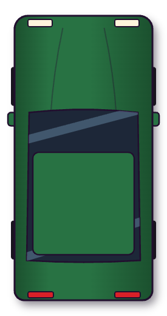
Rigg
Mossy Stone Ct
1987 Celica GT — blue, blue headlights, loud sound system
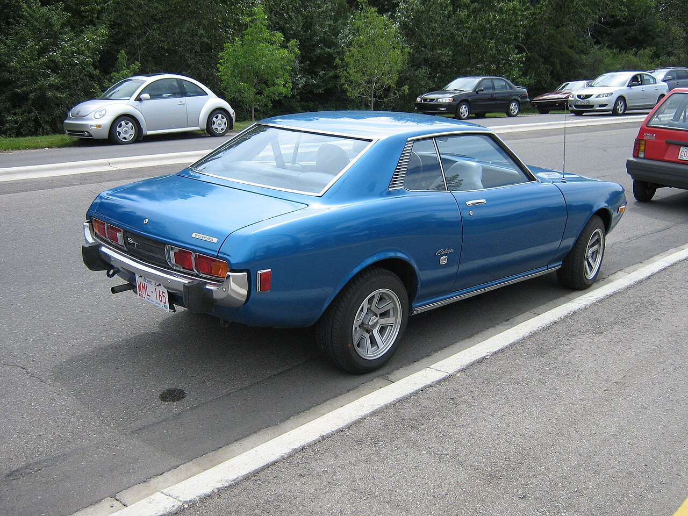
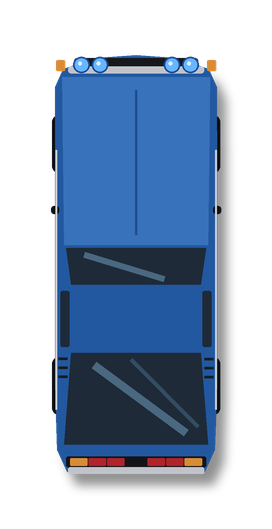
Grant
Early Bud Way
Cadillac Brougham — maroon, the “USS Mino”, 5.61 m of land yacht

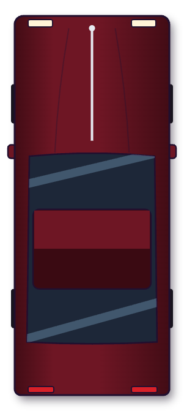
Lamar
Atholton High School — the rally finale
1987 Mustang GT hatchback — ON FIRE
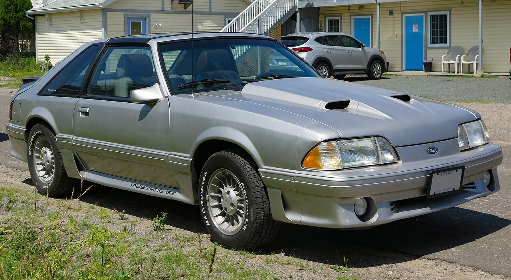
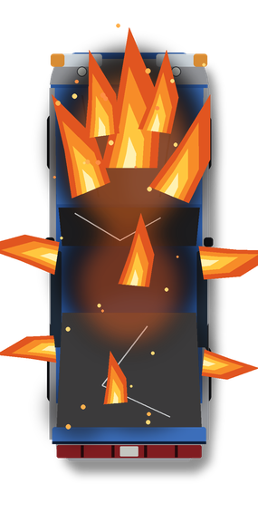